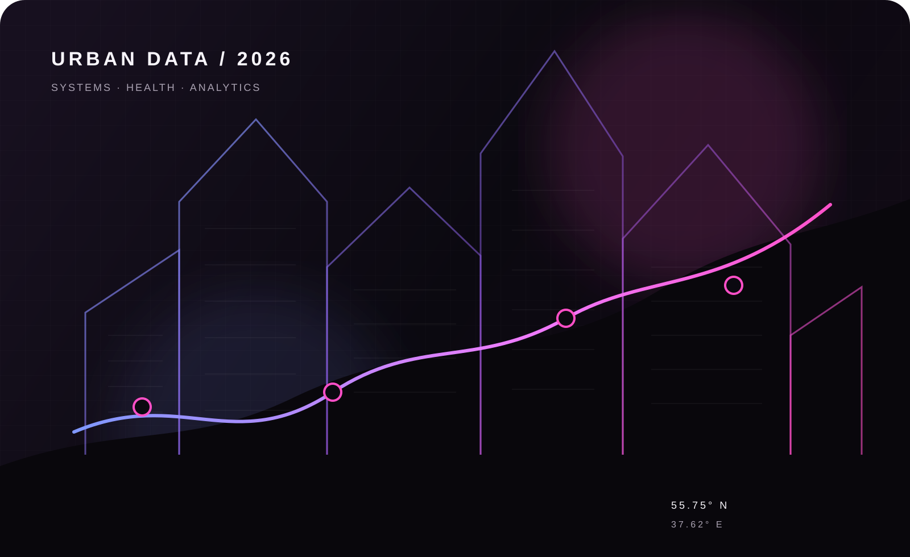
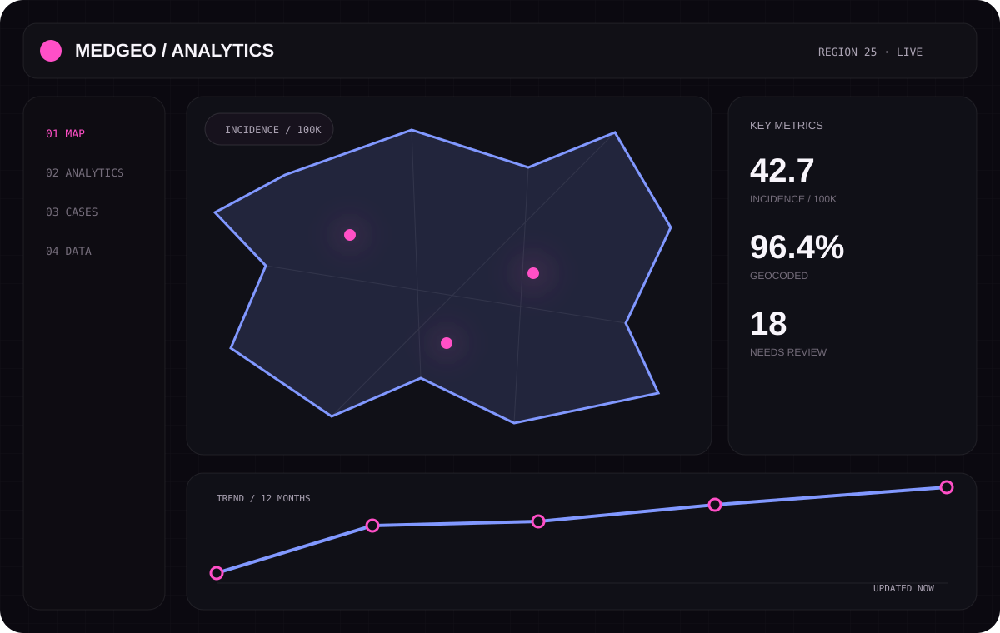
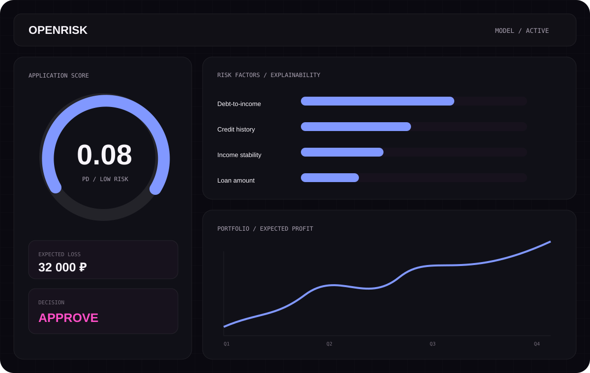
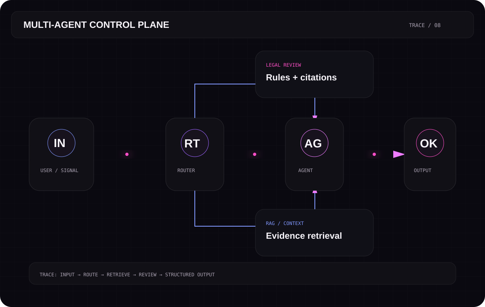
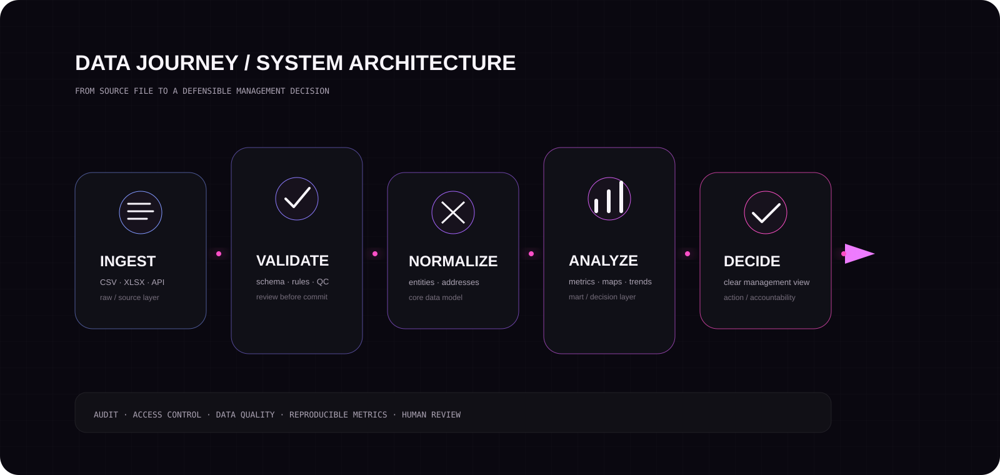

Цифровые продукты Здравоохранение Геоаналитика
Егор Белоусов
Разрабатываю цифровые системы для здравоохранения: от качества медицинских данных и геоаналитики до архитектуры, интерфейсов и внедрения.

Обо мне
Я разработчик с бэкграундом в прикладной информатике. Беру сложный рабочий процесс, разбираюсь в данных и ограничениях, а затем довожу решение до системы, которой действительно пользуются.
ДВФУ, информационные системы и управление
Медицинская аналитика, GIS и автоматизация
Архитектура, разработка, развёртывание и обратная связь
Избранные проекты
Системы, где важны не только код и интерфейс, но и качество данных, объяснимость и внедрение.
МедГео Аналитика
Внутренняя система для противотуберкулёзной службы: карта случаев, территориальные показатели, реестр, рецидивы, импорт данных и контроль качества адресов.

OpenRisk
Информационная система оценки и оптимизации кредитного риска: ML-скоринг, объяснение факторов, ручная проверка, ожидаемые потери и подбор портфеля.
Репозиторий ↗
Мультиагентная система анализа цифровых рисков
Командный проект APRU Tech Policy Hackathon: маршрутизация запроса, поиск доказательств, проверка правил и подготовка структурированного отчёта.

От данных к решению
DATA → DECISION
Рабочий контур
Проверка и нормализация входных данных, расчёт показателей, контроль качества и вывод результата в интерфейс. Каждый этап отделён и проверяем.

Опыт работы
Практика внутри медицинской организации и разработка прикладных информационных систем.
Октябрь 2025 — сейчасВладивосток
Программист
Приморский детский краевой клинический фтизиопульмонологический центр
- Разработал и внедрил внутренний MVP «МедГео Аналитика / OpenMap» для территориальной медицинской аналитики.
- Спроектировал импорт CSV/XLSX, проверку адресов, геокодирование, расчёт показателей и визуализацию случаев на карте.
- Настроил ролевой доступ, аудит изменений и рабочий цикл доработок по обратной связи врачей и руководителей.
Июнь 2024 — сентябрь 2025Владивосток
Стажёр-программист
ДВФУ, сектор проектирования и разработки
- Участвовал в разработке и сопровождении внутренних прикладных решений на C# и платформе «1С:Предприятие».
- Работал с требованиями, отладкой, тестированием и документацией информационных систем.
Достижения
Победитель «Я — профессионал»
Управление цифровым продуктом и инноватика
Призёр «Я — профессионал»
Экономическая и корпоративная безопасность
Зимняя школа ВШБ НИУ ВШЭ
Призёр кейс-дня, трек «Бизнес-информатика»
«Высшая лига» НИУ ВШЭ
Диплом I степени, медиаменеджмент
APRU Tech Policy Hackathon
Международный хакатон в Бангкоке, команда ДВФУ
EF SET C1
67/100; чтение C1, аудирование C2
Над чем работаю
МедГео АналитикаГеокодированиеМедицинская статистикаПродуктовая аналитикаАрхитектура систем
Связаться
По проектам, работе и сотрудничеству — пишите в Telegram или на почту.